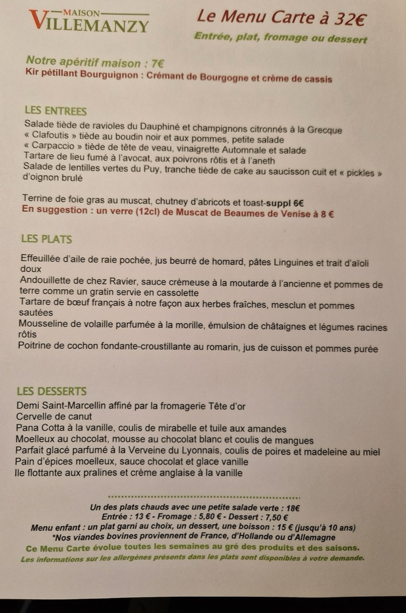
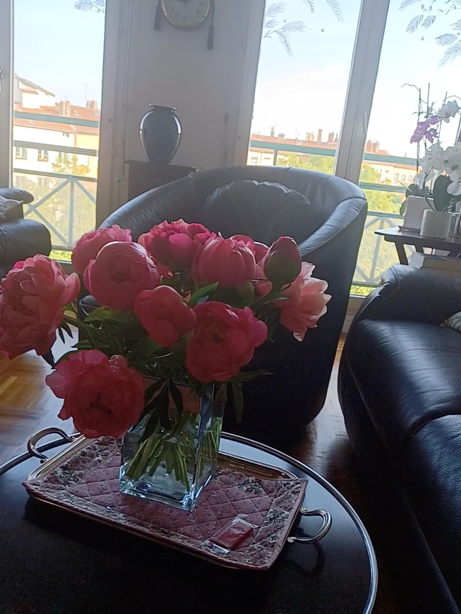
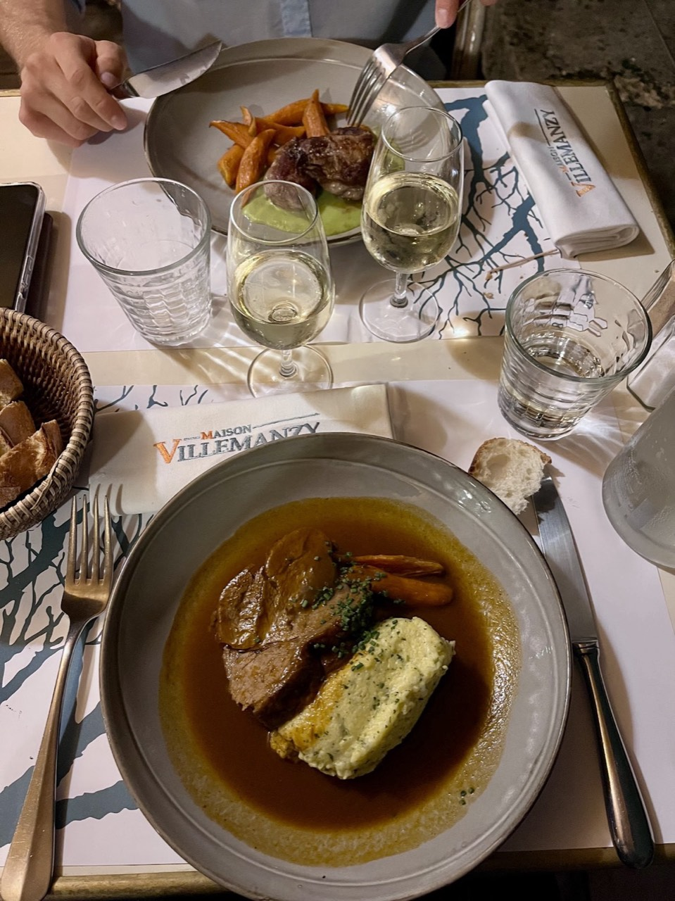
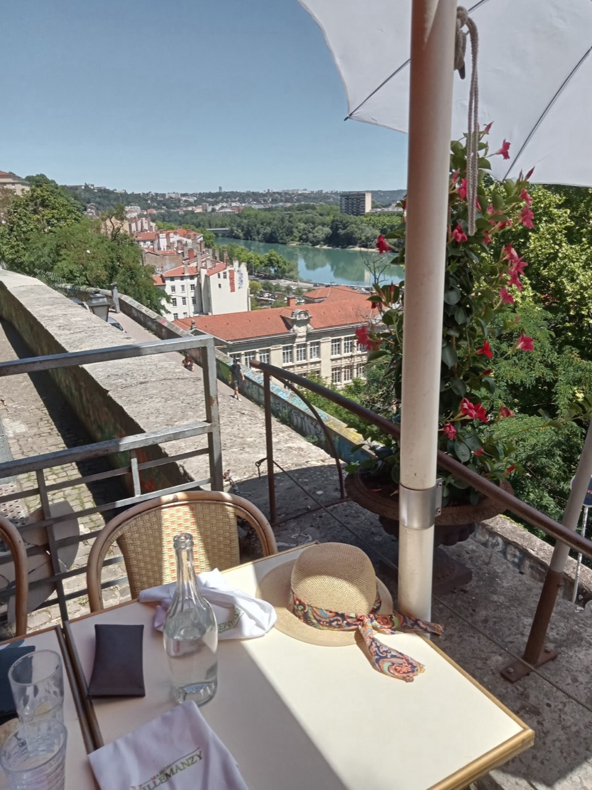
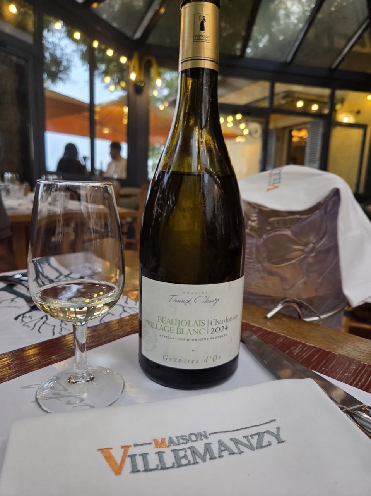
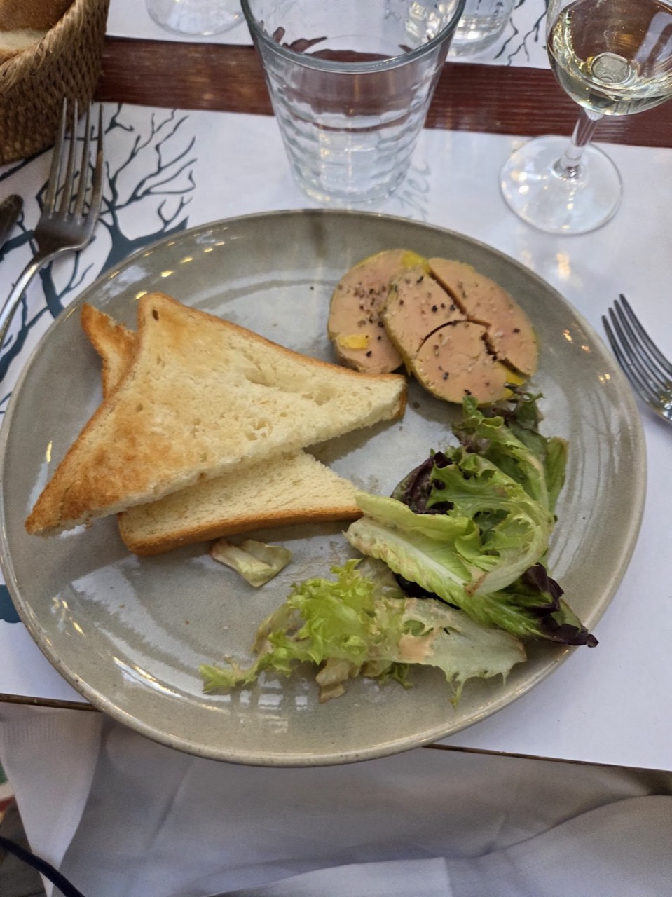
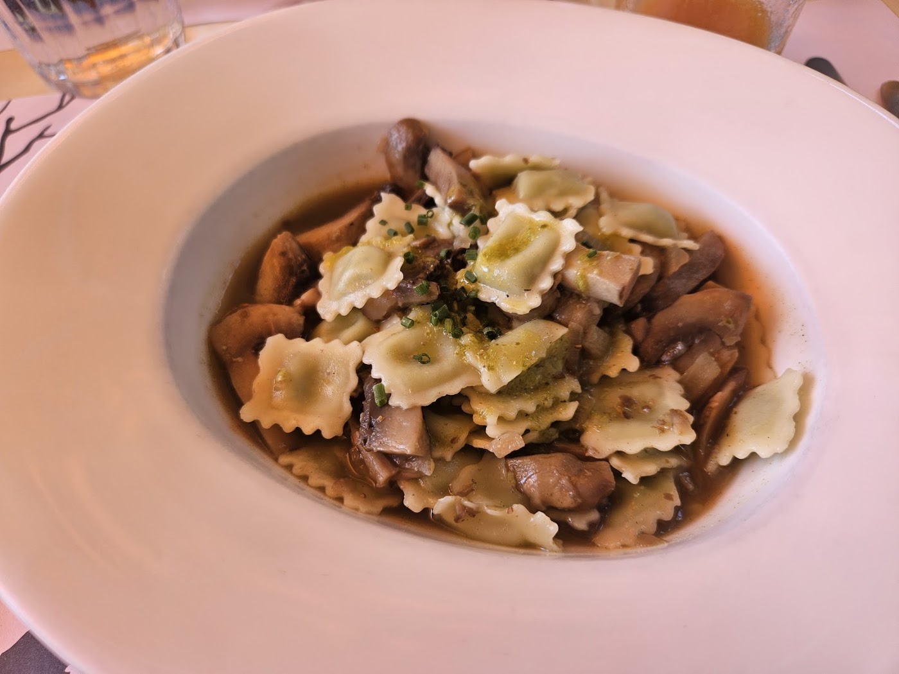

Restaurant · Lyon 1er
Maison Villemanzy
Maison Villemanzy, restaurant à Lyon 1er, vous accueille au 25 Montee Saint Sebastien 69001 Lyon. L'entreprise est en activité depuis 1991.
- Cuisine française
- Options végétariennes
- 4,6 ★ sur Google (820 avis)

En images






Nous trouver
25 Montee Saint Sebastien 69001 Lyon
| Lundi | Fermé |
| Mardi | 12:00–13:30 · 19:30–21:30 |
| Mercredi | 12:00–13:30 · 19:30–21:30 |
| Jeudi | 12:00–13:30 · 19:30–21:30 |
| Vendredi | 12:00–13:30 · 19:30–21:30 |
| Samedi | 12:00–13:30 · 19:30–21:30 |
| Dimanche | Fermé |